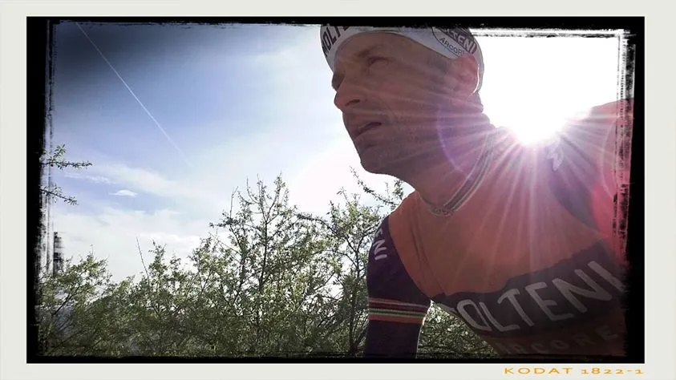
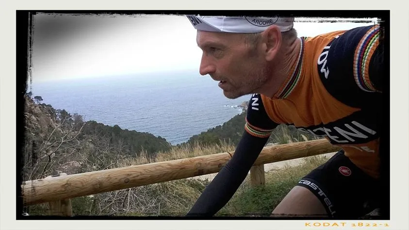
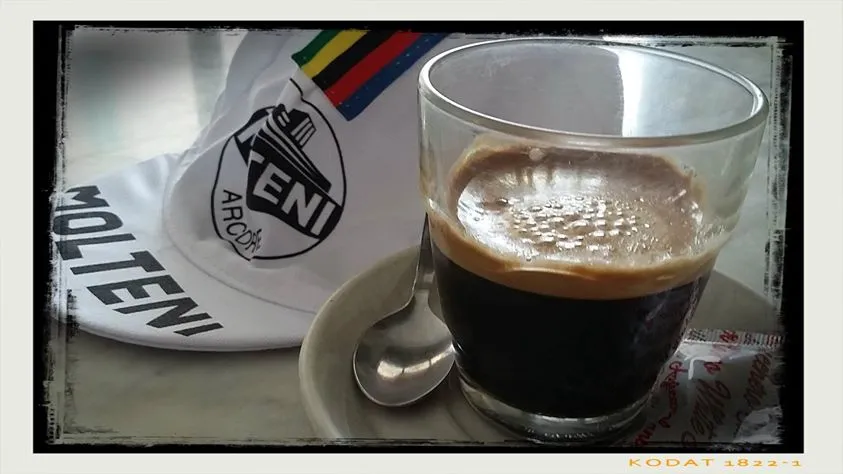
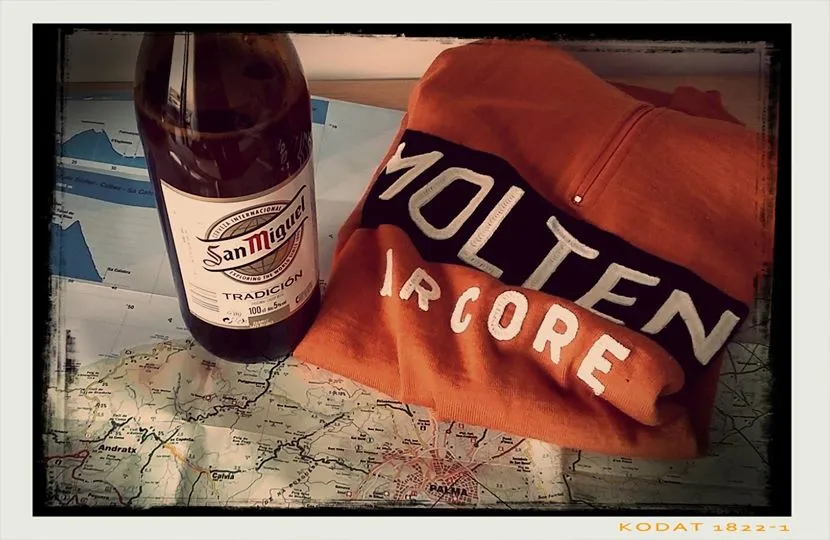

Updates fra kaptajnens træningslejr på Mallorca

Holdkaptajn Bjørnsteen er på træningslejr på Mallorca. Følg med her for små updates i denne uge.
25/03: Morgensol og -intervaller på lækre bjergveje.

- En sort gris i vejkantet så på.
- Rulletur tilbage langs kysten.
- Sidste update.
- Ikke mere film i Kodak Instamatic 60.
- Dagens gudinde: La bella Maria ….
24/03: Morgentræning i det sydlige Serra de Tramuntana.

- Palmanova – Puigpunyent – Galilea – Es Capdellà – Calvia.
- Fuld sol, geder på vejen og var der ikke noget med Jesus og Galilea…
- Dagens øl: Estrella Damm.
- Frisk og læskende.
- God formiddagsøl efter tidlig morgentræning.
- Der er indløbet en ny Mallorca-update fra Bjørnsteen og hans Kodak Instamatic 60.
23/03: Sol, vind og vilde vestkyst.

- Lidt små bjergveje i det sydvestlige – og op langs den sydlige del af den vilde vestkyst: Palmanova – Calvià – Es Capdellà – Andratx – Estellencs.
- Fra Andratx og op langs kysten, som starte med en lækker 6 km opkørsel.
- Lækkert.
- Herefter op, ned, gennem tunnel og hårnålesving.
- Fantastisk vej.
- Dagens øl: Dobbelt espresso på lokal cafe i Calvià.
22/03: Sydlige det del af Serra de Tramuntana bjergkæden.

- Palmanova – Calvia – Es Capdellà – Galilea – Puigpunyent – Coll des Grau.
- Fine små bjergveje med hårnålesning mellem Es Capdellà og Galilea – og igen mellem Puigpunyent og Coll des Grau.
- Dagens øl: San Miguel.
- Fås i praktisk 1 literflaske.